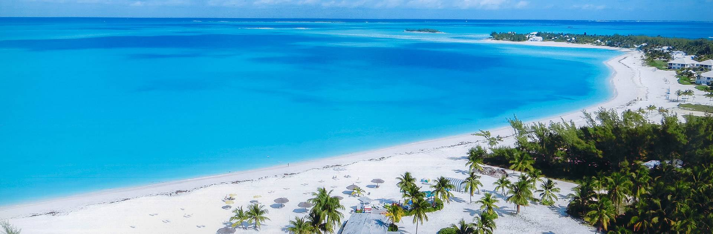
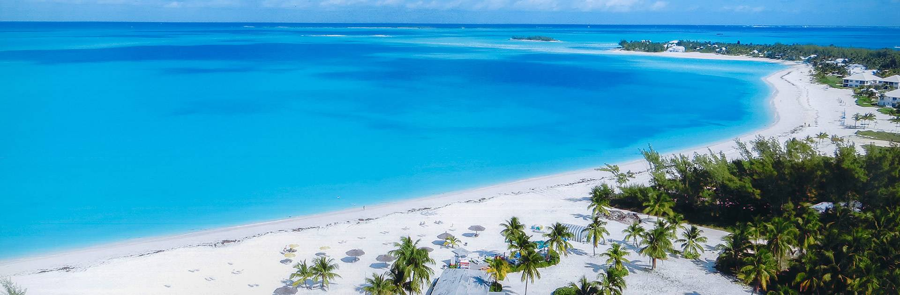

Kaip menininkui, maišančiam spalvas, reikia išbandyti jas paletės pakraštėlyje, kad nutapytų puikų meno kūrinį, taip ir nuotykių ieškotojo paletėje atradus keletą galimybių paaiškėja, kad Bahamos – ideali vieta atradimams. Juk Kristupui Kolumbui 1492 m. netikėtai užklydus į šias įspūdingo kraštovaizdžio salas, pasikeitė pasaulio istorija. O nuotykiai tikrai nesibaigė su laivais „Ninja“, „Pinta“ ir „Santa Maria“. Jei negalite atsispirti Karibų jūros smėliui ir smėlėtiems paplūdimiams, Bahamos tikrai pateisins Jūsų lūkesčius, nes kiekviena sala yra apsupta užburiančios žydrynės. Ilgai nedelskite, nes nuotykių ieškotojams ir klajūnams po pasaulį mažosios Bahamų salos jau siunčia signalus ir kviečia pailsėti, plaukioti baidarėmis bei nardyti. Nutapykite savo nuotykių paveikslą – paletė Jums jau paruošta.
 

Į kelialapį įeina šių vietų lankymas:
Ieva Žukauskaitė 2C